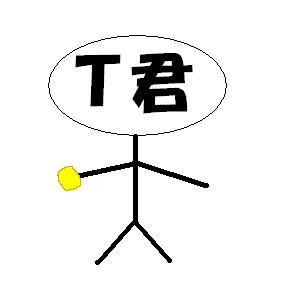
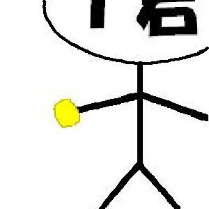
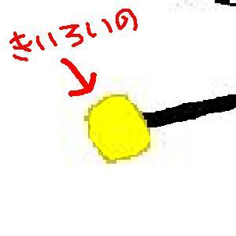

という何弁とも思えぬ言葉でまくし立ててくるため、部員みんな剣道場には行くんです。でもやる気がある部員は少数なので、顧問がいない時に練習が始まる事は少なかったと思います。それにこの顧問、剣道経験０。かたや部員はほとんど小学校から剣道やっていて剣道暦６年以上がほとんど。みなさん剣道の構えって知ってます？竹刀を持つときは右手が上で左手が下。立つ時は「気をつけ」の姿勢で立ってるわけじゃないんですね、右足を前にして左足はやや後ろなんです。剣道経験０だからといっても顧問は顧問なわけで、指導とかもしてたんですよ、でも顧問が構えると、
左足が前
それを見たとき「オイオイオイ×３」くらい焦りました、「まずお前間違ってんじゃん」と。先輩に話を聞いてみると「顧問は空手やってたから構える時自然と左足が前になってしまうらしい」とのことでした。まあ顧問がどうとか以前に部活せずに帰れたらもうけもんだったので時には顧問が来るかどうかの偵察隊を発足して職員室近くまで調べに行ったりすることも。決死の覚悟で偵察に行き、「会議中」この看板がかけられているのを見つけたもんならその日は活動休み。職員室から見えないようにそそくさと下校したもんです。部活がそんなだったから部活の思い出も剣道とは無関係のものが多いかもしれません（おい）。剣道場で剣道以外にやったことといえば、とりあえず、
バレー（踊るほうにあらず）、
バスケット（もちろんリングはなし）
もちろんボールはそれ用のを手に入れてきてプレー。ほかに剣道部であることを生かして（生かすな）
野球（もちろんバットは竹刀）
ボクシング（もちろんグローブは籠手）
あと武道として共通するものとして、
弓道（弓、矢は竹刀の竹）
もちろん顧問に見つかれば説教＆ビンタ＆道具没収というリスクを負いながらも僕たちはあの頃精一杯生きていた、危険と隣り合わせであるがゆえの面白さ、見つかった時のくやしさ、剣道場でありながら複数のスポーツが楽しめたのは僕らの努力のたまものだと思います（ただの罰当たり）それで３年間剣道部だったんですが、一番インパクトのあった事件はという話になると一つに決まってしまいます。その事件ってのもごく普通の放課後に起きました、いつも通りやる気はないが剣道場にあつまってる部員達。もちろん剣道する準備はしてません。そこに一人があるものを持ってきました、消火器です。防災上か何か知りませんが、剣道場にも消火器が置かれていたんです。剣道場にいながらも剣道する気はない、でも帰ると怒られる、そしてそんな場に突如登場した消火器、いじらないわけがありません。数人で消火器を囲んでアホな談義スタート。もちろんテーマは「消火器」。そうなるとやっぱり話はある方向へ・・。
消火器・・にぎってみる？
もちろん本当に握ってしまうとエライことになるわけなんでみんな本当に握るつもりはなかったんです。ある一人の勘違いＭ君を除いて・・。消火器を囲んでる数人に向かいＭ君は言いました、消火器を握って・・、
お前ら、これ握る勇気あるか？
・・・・・・
俺には・・ある！！
グッ！
プシューー！！恐ろしい勢いで何かが出てきました。そう、その時点では何が起こったか分かってないんです。ただピンク色の何かが恐ろしい勢いで出てきてるんです。あとで分かったんですが、消火器の粉ってピンクだったんですね。それで一瞬間があいてから先輩の声、
もうその場にいるみんな大パニック。大災害が起きたかのごとく、逃げ惑う人々。間違いなくそこは戦場だった・・。粉がかからないよう自分のカバンを持って非難する部員、とりあえずそこから離れて消火器を見つめる部員、中でも１番パニックなのは、そう、
Ｍ君それはそうです。本来消火器ってのは誤作動防止のために
止め具（黄色いの）がついててそのまま握っただけでは使えないようになってるんですから。Ｍ君の頭の中では、
「なんで？粉出るわけないじゃん？
でも粉出ちまってるよ、
ありったけ出ちまってるよ（激汗）」
「逃げちゃダメだ逃げちゃダメだ逃げちゃダメだ
逃げちゃダメだ逃げちゃダメだ逃げちゃダメだ」こういった思いがかけめぐっていたことでしょう。起こるはずのない現実が目の前に起きている事実。しかも驚いた拍子にホースから手、離しちゃってたんです。恐ろしい勢いで粉を撒き散らし踊り狂う消火器、よく見てみると、
ついてないんです、黄色いのが。どこいった？とあたりを見回してみると、



Ｔ君、止め具抜いちゃってるーー！！
全ての謎解けました、止め具外してりゃ握れば粉でます、至極当然の出来事。でも消火器の粉も無限ではないわけで、やりたい放題粉撒き散らして果てたんですね。残ったのは、
棒立ちの部員と粉まみれの剣道場
それと
ピンクがかった空気粉宙に舞ってるんです。しかもなんか舌がヒリヒリする・・。どうやらみなさん、
消火器の粉は辛いみたいですまあとにかく道場の粉をどうにかしないといけません、顧問が見たらマジシャレになりません。ちょくちょくケンカしたりする部員達ですが、こんな時だけ一致団結。迅速かつ適切に粉を処理します、
ロッカーの裏へ。根本的な解決にならないってのはみんな
頭では分かっているが心で分かってない。とりあえず目に見える粉は処分したところ、ふと天井を見ると、
モワワワワワ
粉全然落ちてこねえっての。科学系の番組とかでもし大きな火山が爆発したら、もし巨大隕石が激突したら、世界はチリに覆われ暗黒の冬が来る。よくそういう話聞きますよね。
「ああ、そういうことね」と一人納得。全然落ちてくる気配ありません。いくらなんでも掃除機で吸うわけにもいかず、途方に暮れる部員達。そこを、
カツン・・カツン・・誰かが階段を上がる音が・・。放課後も大分時間がたった今、階段を上がってくるのは一人しかいない・・・
ヤツ（顧問）だ！！（部員全員激汗）もうどうすることもできずただその場に立ち尽くす部員達。そして現れる顧問、剣道場に目を向けた瞬間、顧問の口から出た言葉は、
な、なんじゃこりゃあ！！故松田勇作本人もビックリするような「なんじゃこりゃあ」を披露。そしてその次に出た言葉は、
集合
連絡事項とか説教とか基本的にイヤな時にしか使われない言葉、
集合。粉が飛び交う中、中央に正座する部員達。もうすでに顧問怒り爆発気味。
顧問「これはどういうことね？」
部員「あの・・消火器が・・」
顧問「消火器が？消火器がなに？」
部員「粉吹いたんです」
両者「・・・・」
顧問「その消火器持ってこい」ロッカーの裏から
粉まみれの無残な消火器登場。それから主犯（？）のＭ君と消火器は顧問に連れられ消えていきました・・・。それで
その日の部活は
大掃除ってことになりましたとさ。確かに消火器の取っ手をにぎる勇気はたいしたものですが、
僕はそんな勇気いらない消火器を扱う時はくれぐれもご注意を・・。
戻る